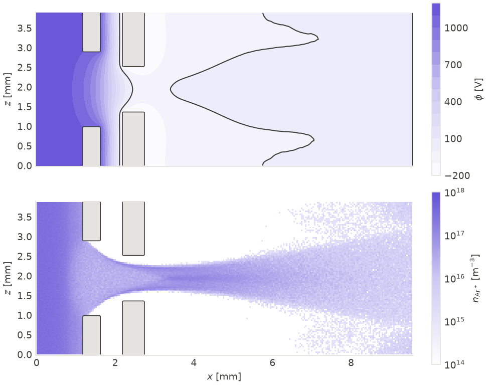
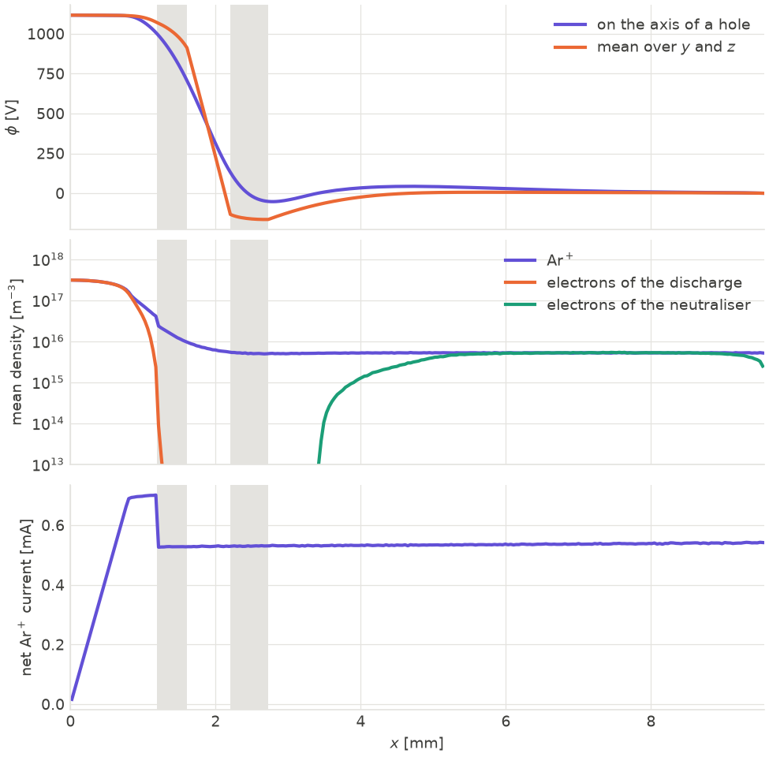
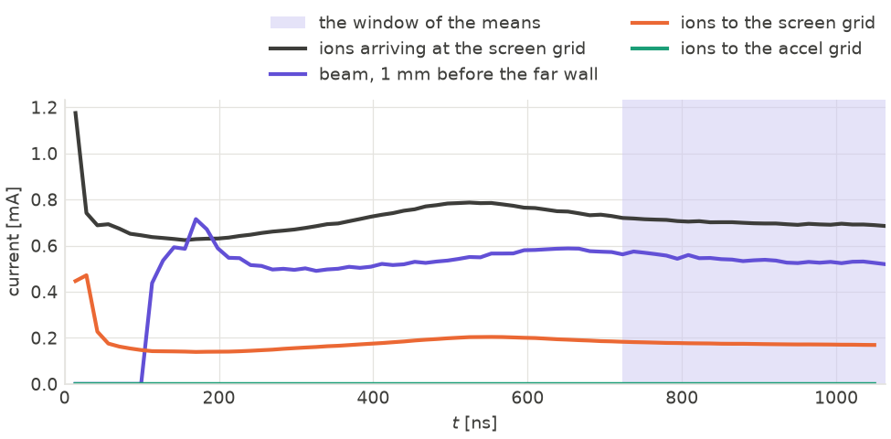

Ion optics of a gridded ion thruster#
A gridded ion thruster draws ions out of a discharge plasma through the holes of two grids. The screen grid is at the high potential of the plasma. The accel grid behind it is negative: the field between the two grids accelerates the ions and focuses them into one beamlet per hole, and the negative potential keeps the electrons that neutralize the beam from streaming back into the discharge. This case simulates one periodic cell of such grids in 3-D, with the plasma, two beamlets and the neutralizing electrons. It has no theory and no other code to compare with, so the results below describe what the run gives.
Setup#
The beam goes along \(x\). The holes sit on a hexagonal lattice with a pitch of 2.24 mm from hole to hole. The cell is one pitch along \(y\) and \(\sqrt{3}\) pitches along \(z\), with a hole at its corners and one at its centre, so it holds two beamlets.
Domain |
9.56 mm × 2.24 mm × 3.88 mm, periodic in \(y\) and \(z\) |
Grid |
256 × 60 × 104 cells of 37.3 µm (1.26 Debye lengths of the discharge plasma) |
Wall at \(x = 0\) |
reflective: the middle of the discharge chamber |
Discharge plasma |
electrons (4 eV) and Ar⁺ (0.1 eV), \(2.5\times10^{17}\ \mathrm{m^{-3}}\), loaded from \(x = 0\) to 1.2 mm. Between \(x = 0\) and 0.8 mm both are created at the rate that replaces a Bohm flux to the plane of the screen grid, and the electrons are redrawn at 4 eV. |
Screen grid |
from \(x = 1.2\) to 1.6 mm, at +1100 V, with holes of 1.91 mm diameter |
Accel grid |
from \(x = 2.2\) to 2.72 mm, at −180 V, with holes of 1.14 mm diameter; the gap between the grids is 0.6 mm |
Grids as objects |
conductor boxes, 144 in all: a node is solid where it is farther than the radius of the hole from the axis of every hole |
Wall at \(x = 9.56\) mm |
grounded and absorbing. It emits the neutralizing electrons (2 eV) at 0.87 mA, twice the ion current that a Bohm flux carries through the two screen holes. |
Collisions |
Monte Carlo collisions of the electrons and the ions with a background of argon, \(3\times10^{18}\ \mathrm{m^{-3}}\) at 300 K. They include the charge exchange of the beam ions. |
Particles |
100 per cell and species in the discharge plasma at the start, \(2\times10^{7}\) per species. The ions are moved every 10th step. |
Time step |
\(7.09\times10^{-12}\) s (\(\omega_{pe}\,\Delta t = 0.2\)) |
Run |
150 000 steps (1.06 µs), output every 2000 steps |
Field solver |
GMG3D, the 3-D multigrid; relative tolerance \(10^{-5}\) |
Build |
the default build (quadratic particle shape, single precision) |
Cost |
about 70 min on one NVIDIA A100 |
Running#
python examples/thrusters/ion_thruster/case.py runs/ion_thruster
build/HEXAPIC runs/ion_thruster/case.toml > runs/ion_thruster/run.log
python examples/thrusters/ion_thruster/analyze.py runs/ion_thruster
case.py writes runs/ion_thruster/case.toml. analyze.py reads the
series and the log of the run, run.log, which has the currents that the
grids collect. It prints the numbers below and writes results.json and
the three figures into the run’s directory.
Option of |
|
|---|---|
|
cells across a pitch, a multiple of 4 (default 60). It sets the cell size, and with it the cells along \(x\) and \(z\). |
|
the number of steps |
|
an output every |
|
write the frames that HEXAPIC / VIZ shows during the run |
Option of |
|
|---|---|
|
take the means of the currents over the last |
|
the log of the run (default |
Results#
The beam reaches the far wall after about 100 ns, and the currents settle over the next 600 ns. The maps and the profiles are from the last output, at 1.06 µs. The currents are means over the last third of the outputs, from 0.72 to 1.06 µs, with the standard error of the outputs.
Potential and beamlets#

The potential (top) and the density of the ions (bottom) at 1.06 µs in the plane through the centre hole, \(y\) at half a pitch. The grids are grey: the screen grid on the left, the accel grid on the right. The black line is the contour of 0 V.
The discharge plasma is at 1116 V, 16 V above the screen grid. A sheath separates it from the grid, and its edge bulges into each screen hole. The ions that cross this edge are accelerated towards the accel grid and focused into a beamlet, which is narrower than the accel hole and widens behind it. On the axis of a hole the potential falls to −52 V at \(x = 2.8\) mm, just behind the accel grid. This negative barrier stops the neutralizing electrons: their density falls to zero near \(x = 3.4\) mm, and the electrons of the discharge end at the screen grid. Further downstream the electrons balance the charge of the ions, both at \(5\times10^{15}\ \mathrm{m^{-3}}\) in the mean over the cross-section, and the potential stays below 50 V.

Along \(x\): the potential on the axis of a hole and its mean over \(y\) and \(z\), the mean densities of the three species at 1.06 µs, and the net ion current through the planes of cells as the mean over the window. The grey bands are the two grids.
Currents and perveance#

The ion current that arrives at the screen grid, the beam current 1 mm before the far wall, and the ion currents that the screen grid and the accel grid collect.
Mean over 0.72 to 1.06 µs |
|
|---|---|
Ions arriving at the screen grid [mA] |
\(0.700 \pm 0.002\) |
Ions collected by the screen grid [mA] |
\(0.174 \pm 0.001\) |
Beam current, 1 mm before the far wall [mA] |
\(0.541 \pm 0.003\) |
Beam current per hole [mA] |
0.270 |
Ion transparency of the screen grid |
0.77 |
Ions collected by the accel grid [mA] |
\(1.8\times10^{-5}\) |
Of the ions that arrive at the screen grid, 77 % leave as the beam. The open area of the screen grid is 66 % of its plane: the sheath edge that bulges into the holes also draws in ions that started in front of the solid part. The accel grid collects \(3\times10^{-5}\) of the beam current, so the beamlets pass it without touching it, and the slow ions of the charge exchange add little at this gas density. The beam current still falls slowly over the window, from 0.57 to 0.52 mA.
The perveance of a hole is \(P = I / V^{3/2}\), with the beam current \(I\) of the hole and the voltage \(V\) from the plasma to the accel grid, 1296 V. The Child–Langmuir law limits it to
where \(r_s\) is the radius of the screen hole, \(t_s\) the thickness of the screen grid, \(l_g\) the gap and \(M\) the mass of the ion. The run gives \(P = 5.79\times10^{-9}\ \mathrm{A/V^{3/2}}\), which is 0.45 of \(P_\mathrm{max} = 1.28\times10^{-8}\ \mathrm{A/V^{3/2}}\): the grids work below their space-charge limit, as the focused beamlets show.
The beam#
The energy and the angles are those of the beam ions between 0.5 and 1.5 mm before the far wall at the last step, \(3.5\times10^{5}\) macroparticles.
Mean energy [eV] |
1111.6, standard deviation 3.0 |
Divergence, rms angle to \(x\) [°] |
8.8 |
Angle that holds 95 % of the ions [°] |
16.7 |
Slow ions among them |
0.06 % |
The ions arrive with the energy of the fall from the plasma at 1116 V to the beam, which is a few volts above the grounded wall. The slow ions are those of the charge exchange.
Files#
|
the case as a PICMI script |
|
the case as |
|
the potential, the beamlets and the currents, from a run and its log |
|
the figures above, as |
|
the origin of the geometry and of the formulas |
The script#
case.py
#!/usr/bin/env python3
"""ion_thruster: the ion optics of a gridded ion thruster in 3-D.
python case.py DIR # DIR/case.toml
python case.py DIR --run # and HEXAPIC on it (build/HEXAPIC; --hexapic: another), into DIR/output
python case.py # the case.toml beside this script
A cell of the two grids of an ion engine. The holes and their spacing are
those of the NSTAR 30 cm thruster's grids; the gas is argon. The beam goes
along x:
x = 0 reflective: the middle of the discharge chamber
0 - 0.8 mm the discharge plasma is kept up: Ar+ and electrons are
created at the rate that replaces a Bohm flux to the screen
grid, and the electrons are redrawn at Te
1.2 mm the screen grid, +1100 V, 0.40 mm thick, holes of 1.91 mm
2.2 mm the accel grid, -180 V, 0.52 mm thick, holes of 1.14 mm; its
negative potential keeps the neutraliser's electrons out
beyond the Ar+ beamlets, neutralised by electrons from the far wall
x = 9.6 mm grounded: it emits the neutraliser's electrons (2 eV)
y and z are periodic. The holes sit on a hexagonal lattice: the cell is one
pitch along y and sqrt(3) pitches along z, with a hole at its corners and
one at its centre, so it holds two beamlets. A grid is made of conductor
boxes: a node is solid where it is farther than the hole's radius from every
hole's axis. The beam ions exchange charge with a background of argon
(MCC): the slow ions born behind the accel grid fall back onto it.
--ny sets the cells across a pitch (the resolution); --steps and --every
shorten the run and set its output; --live writes the frames HEXAPIC / VIZ
shows during the run.
"""
import argparse
import math
from pathlib import Path
from hexapic import picmi
ap = argparse.ArgumentParser(description="the ion optics of a gridded ion thruster: case.toml")
ap.add_argument("dir", nargs="?", type=Path)
ap.add_argument("--ny", type=int, default=60, help="cells across a pitch, a multiple of 4 (default 60: 37 um)")
ap.add_argument("--steps", type=int, default=150000, help="1.06 us")
ap.add_argument("--every", type=int, default=2000, help="an output every this many steps")
ap.add_argument("--live", action="store_true")
ap.add_argument("--run", action="store_true")
ap.add_argument("--hexapic", type=Path, help="the binary --run runs (default build/HEXAPIC)")
args = ap.parse_args()
HERE = Path(__file__).resolve().parent
# the grids [m], [V]
PITCH = 2.24e-3 # from hole to hole
R_SCREEN, R_ACCEL = 0.955e-3, 0.57e-3 # the holes' radii
T_SCREEN, GAP, T_ACCEL = 0.40e-3, 0.60e-3, 0.52e-3
X_SCREEN = 1.20e-3 # the screen grid's upstream face
V_SCREEN, V_ACCEL = 1100.0, -180.0
LENGTH = 9.6e-3 # the box along x
# the discharge plasma
N0, TE, TI = 2.5e17, 4.0, 0.1 # [m^-3], [eV], [eV]
X_SOURCE = 0.8e-3 # the source and the heating in x < X_SOURCE
PPC = 100 # macroparticles per cell and species in the discharge plasma
BOHM = 0.61 # the density at the sheath edge over N0
# the neutraliser and the gas
NEUTRALISER, T_NEUTRALISER = 2.0, 2.0 # its current over the expected beam's, its electrons [eV]
N_GAS, T_GAS = 3e18, 300.0 # the argon background [m^-3], [K]
c = picmi.constants
m_ar = picmi.particle_mass_charge("Ar", 1)[0]
cs = math.sqrt(TE * c.q_e / m_ar) # the ion sound speed
rate = BOHM * N0 * cs / X_SOURCE # the source replaces a Bohm flux through the screen's plane
w_pe = math.sqrt(N0 * c.q_e ** 2 / (c.ep0 * c.m_e))
# the mesh: cubic cells, a multiple of 4 along each axis; y one pitch, z sqrt(3) pitches
ny = 4 * round(args.ny / 4)
nz = 4 * round(ny * math.sqrt(3) / 4)
dx = PITCH / ny
nx = 4 * round(LENGTH / dx / 4)
ly, lz = ny * dx, nz * dx
dt = 0.2 / w_pe
weight = N0 * dx ** 3 / PPC
i_beam = BOHM * N0 * cs * c.q_e * 2 * math.pi * R_SCREEN ** 2 # a Bohm flux through the two screen holes [A]
grid = picmi.Cartesian3DGrid(number_of_cells=[nx, ny, nz], lower_bound=[0.0, 0.0, 0.0], upper_bound=[nx * dx, ly, lz],
lower_boundary_conditions=["neumann", "periodic", "periodic"],
upper_boundary_conditions=["dirichlet", "periodic", "periodic"],
lower_boundary_conditions_particles=["reflecting", "periodic", "periodic"],
upper_boundary_conditions_particles=["absorbing", "periodic", "periodic"])
sim = picmi.Simulation(
solver=picmi.ElectrostaticSolver(grid=grid), time_step_size=dt, max_steps=args.steps,
hexapic_title="ion_thruster",
hexapic_description="The ion optics of a two-grid ion thruster in 3-D: a periodic cell of the grids with two "
"beamlets, the discharge plasma behind the screen grid and the neutralised beam.",
hexapic_output={"x_profiles": True, "wall_flux": True, "counts_every": 100} | ({"live": True} if args.live else {}),
hexapic_tuning={"store_slack": 1.0}) # the plasma fills an eighth of the box: more room in its bins
sim.add_diagnostic(picmi.FieldDiagnostic(grid=grid, period=args.every))
# the species and the discharge plasma at the start
vte, vti = math.sqrt(TE * c.q_e / c.m_e), math.sqrt(TI * c.q_e / m_ar)
plasma = dict(density=N0, lower_bound=[0.0, 0.0, 0.0], upper_bound=[X_SCREEN, ly, lz], hexapic_weight=weight)
electrons = picmi.Species(particle_type="electron", name="electrons",
initial_distribution=picmi.UniformDistribution(rms_velocity=[vte] * 3, **plasma))
ions = picmi.Species(particle_type="Ar", charge_state=1, name="Arplus", hexapic_subcycle=10,
initial_distribution=picmi.UniformDistribution(rms_velocity=[vti] * 3, **plasma))
neutraliser = picmi.Species(particle_type="electron", name="neutraliser")
for sp in (electrons, ions, neutraliser):
sim.add_species(sp, None)
src = {"lower": [0.0, 0.0, 0.0], "upper": [X_SOURCE, ly, lz]}
for sp, T in (("electrons", TE), ("Arplus", TI)):
sim.add_source(picmi.Source(species=sp, rate=rate, region=src, weight=weight, temperature_eV=T))
sim.add_heating(picmi.Heating(species="electrons", model="resample", region=src, temperature_eV=TE,
interval=10, probability=0.05))
sim.add_beam(picmi.Beam(species="neutraliser", nodes={"from": [nx, 0, 0], "to": [nx, ny, nz]},
current=NEUTRALISER * i_beam, weight=weight, temperature_eV=T_NEUTRALISER))
sim.add_interaction(picmi.MCCCollisions(gas="Ar", pressure=N_GAS * 1.380649e-23 * T_GAS, temperature_eV=0.02585,
electron="electrons", ion="Arplus"))
def solid_boxes(radius):
"""The node boxes (k1, k2, l1, l2) of a plate with holes of `radius` on the lattice: the runs of solid nodes
along z in each row of y, and equal runs of neighbouring rows merged. The nodes are 0 to N - 1 along an axis
(node N of a periodic axis is its node 0)."""
holes = [(0.0, 0.0), (ly / 2, lz / 2)]
def solid(k, l):
y, z = k * dx, l * dx
for hy, hz in holes:
dy = min(abs(y - hy), ly - abs(y - hy))
dz = min(abs(z - hz), lz - abs(z - hz))
if dy * dy + dz * dz <= radius * radius:
return False
return True
rows = []
for k in range(ny):
runs, l = [], 0
while l < nz:
if solid(k, l):
l0 = l
while l < nz and solid(k, l):
l += 1
runs.append((l0, l - 1))
else:
l += 1
rows.append(runs)
boxes, started = [], {}
for k in range(ny + 1):
runs = set(rows[k]) if k < ny else set()
for run in list(started):
if run not in runs:
boxes.append((started.pop(run), k - 1, *run))
for run in runs:
started.setdefault(run, k)
return boxes
j_screen = round(X_SCREEN / dx)
plates = (("screen", j_screen, j_screen + round(T_SCREEN / dx), R_SCREEN, V_SCREEN),
("accel", j_screen + round((T_SCREEN + GAP) / dx), j_screen + round((T_SCREEN + GAP + T_ACCEL) / dx),
R_ACCEL, V_ACCEL))
for name, j1, j2, radius, voltage in plates:
for k1, k2, l1, l2 in solid_boxes(radius):
sim.add_region(picmi.Region(type="conductor", nodes={"from": [j1, k1, l1], "to": [j2, k2, l2]},
voltage=voltage, name=name))
if args.run and args.dir is None:
ap.error("--run needs a directory for the run")
print(sim.write_input_file((args.dir or HERE) / "case.toml"))
if args.run:
sim.run(**({} if args.hexapic is None else {"hexapic": args.hexapic.resolve()}))
References#
The case has no data from other codes to compare with.
The grids have the dimensions of the script’s header: screen holes of 1.91 mm, accel holes of 1.14 mm, a pitch of 2.24 mm, a gap of 0.60 mm, and grids of 0.40 and 0.52 mm. They are rounded values in the range of the grids of the NSTAR 30 cm ion thruster and are not taken from a table of a paper. The gas is argon and the plasma density is chosen for the cell size, so the case does not model that thruster.
The Child–Langmuir law of the space-charge-limited current, to which
analyze.py compares the perveance of a hole: Child [1911],
Langmuir [1913]. The Bohm flux that sets the rate of the plasma
source: Riemann [1991]. The collisions with the argon background:
Collisions.